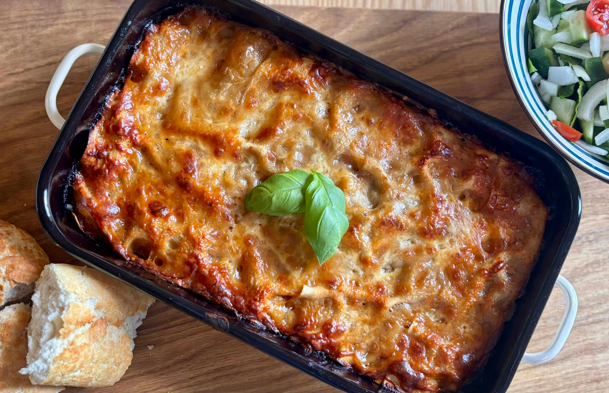

Creamy Chicken Lasagna

Why choose this recipe
This chicken lasagna is made with tender chicken breasts, red sauce, and lots of mozzarella cheese for a
fantastic flavor combination. Everyone who tastes it raves!
Ingredients
- 3 uncooked lasagna noodles
- 1 ½ skinless, boneless chicken breast halves
- 1 cup shredded mozzarella cheese, divided
- ½ (8 ounce) package cream cheese, softened
- ⅛ cup hot water
- ½ cube chicken bouillon
- ½ (26 ounce) jar spaghetti sauce
How do you make it?
-
Gather all ingredients. Preheat the oven to 350 degrees F (175 degrees C).
-
Bring a large pot of lightly salted water to a boil. Cook lasagna noodles in boiling water, stirring
occasionally, until tender yet firm to the bite, about 8 minutes. Drain, rinse with cold water, and set
aside.
-
Meanwhile, place chicken in a saucepan with enough water to cover; bring to a boil. Cook until chicken is no
longer pink and the juices run clear, about 20 minutes. Remove chicken from the saucepan and shred.
-
Combine shredded chicken, 1 cup mozzarella cheese, and cream cheese in a large bowl. Dissolve hot water and
bouillon in a liquid measure; pour over chicken mixture and stir until well combined.
-
Spread 1/3 of the spaghetti sauce in the bottom of a 9x13-inch baking dish. Cover with 1/2 of the chicken
mixture and top with 3 lasagna noodles; repeat. Top with remaining sauce and sprinkle with remaining 1 cup
mozzarella cheese.
- Bake in the preheated oven for 45 minutes.
- Serve and enjoy!
Back to Home